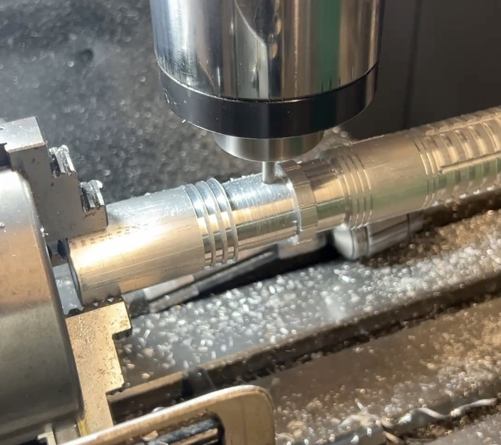
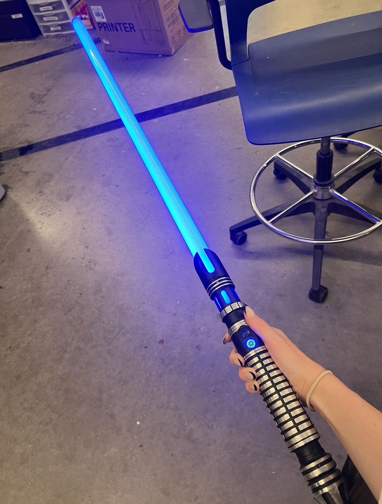
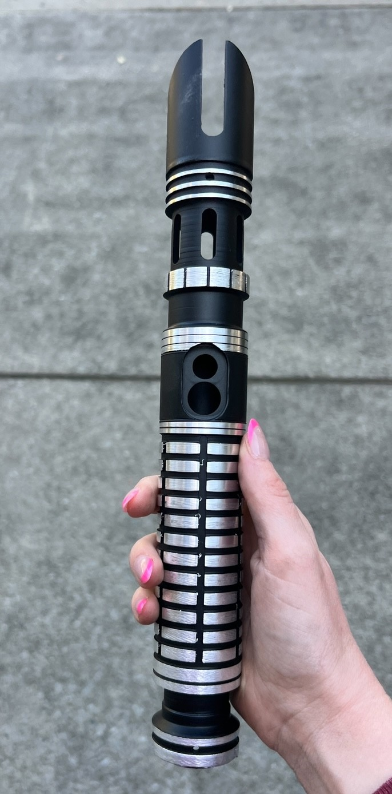

I designed a custom light saber hilt in Solidworks CAD software. I then machined the hilt out of aluminum using a metal lathe and mill.
Completed CAD model of the light saber hilt.
Machining the hilt on the mill.
Finished hilt with assembled electronics and blade.
Finished hilt without blade and electronics.